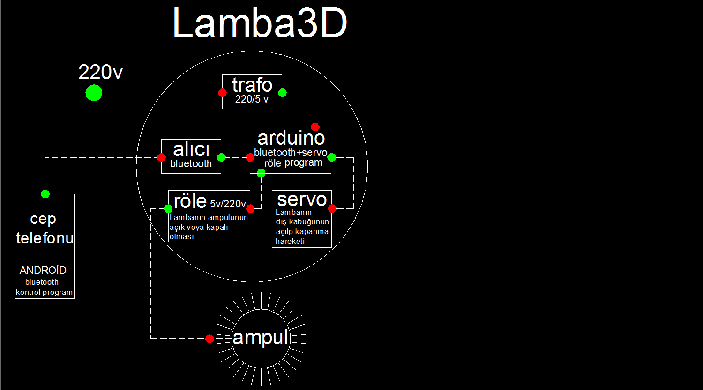
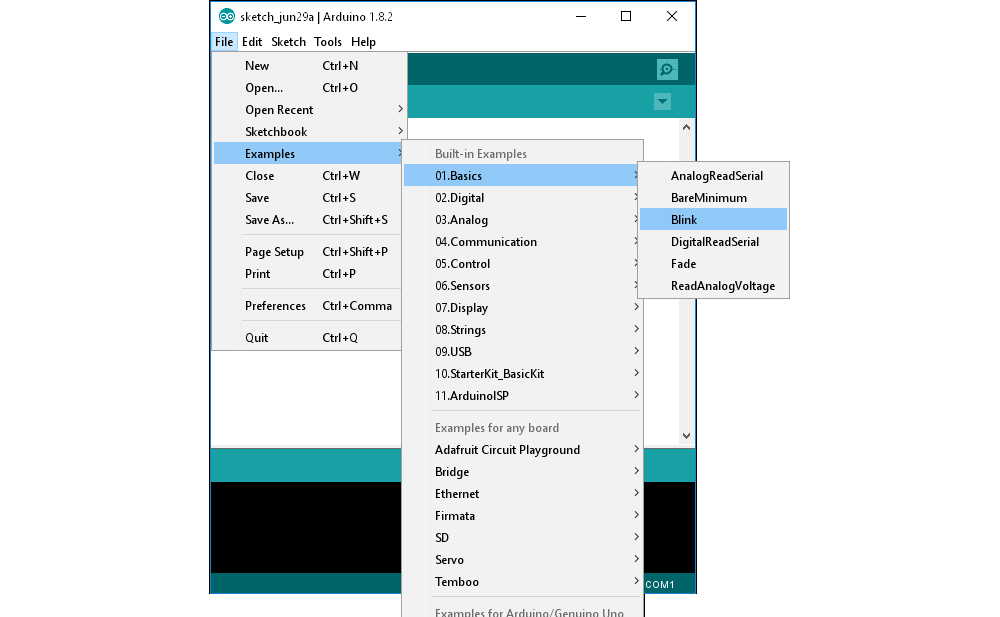
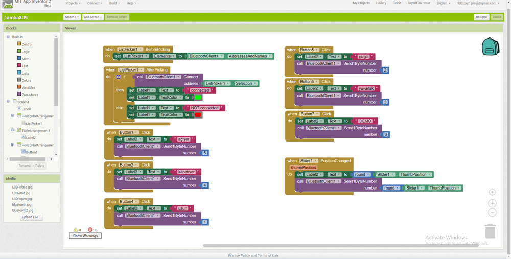
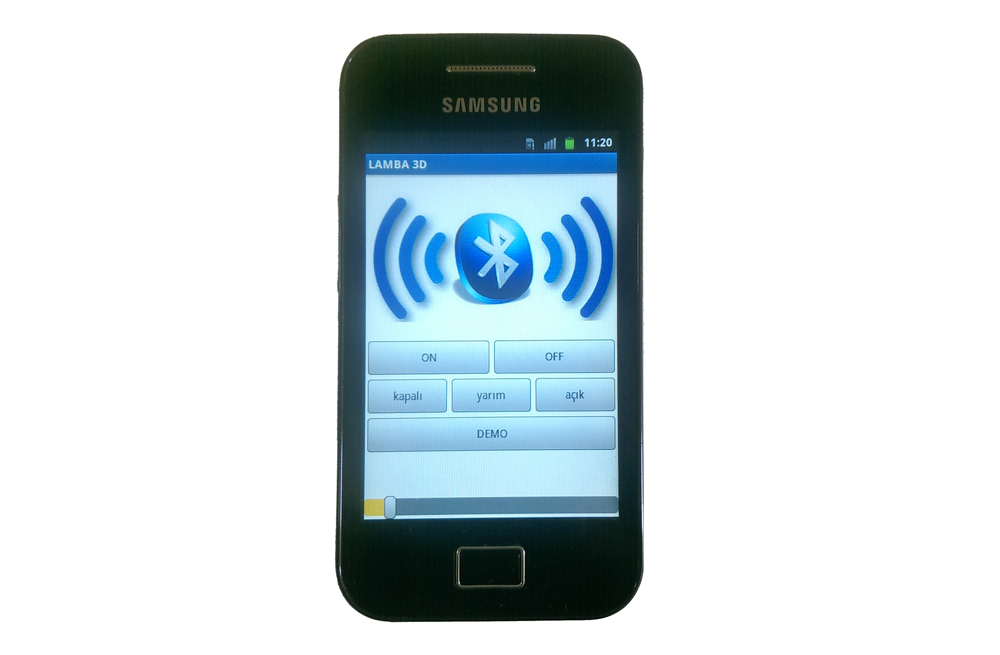

Lamba3D yazılım
Merhaba Meraklı dostlar…
Giriş
Burada Lamba3D projemin yazılım işlerinden bahsetmek istiyorum. Projenin bu bölümü mekanik ve elektronik bölümü gibi sürekli değişim halinde ancak bunları da en başından anlatmak istiyorum.
Projede yazılımla temelde iki şeyi kontrol etmem gerekiyordu,
- Arduino elektronik kart için, Arduino IDE
- Telefon bluetooth haberleşmesi için, MIT App Invertor
Ana şema olarak şöyle bir şeye ihtiyacım vardı.

Lamba3D projemizin genel işleyiş şeması
1.Bölüm
Bu bölümde Arduino ile nasıl ve neler yapılır değil, Lamba3D projem için Arduino ile nasıl ve ne yaptım onu anlatmak istiyorum…
Arduino IDE Arduino elektronik kartların programlanması ve PC ile olan haberleşmenin sağlanması için basit bir program. Bu linkte programcılık hakkında çok güzel bilgiler var bir göz atın derim…
Arduino dünyası, yapmak istediğimiz projelerin büyük bir kısmının bizler gibi meraklı arkadaşlar tarafından denenmekte olduğu çok aktif bir dünya. Yapmaya çalıştığımız bir projeyi mutlaka birileri de ya yapıyor, ya yapmak üzere yada yapmış…Programımızda hangi aşamada olursak olalım, küçük bir araştırmayla bulacağımız çalışmaları incelersek, belki de hiç yazmamıza bile gerek kalmadan bulduğumuz örnekleri olduğu gibi projemizde kullanabiliriz. Belki de küçük revizyonlarla işimize yarar hale getirebiliriz. Hiç biri olmazsa tecrübelerden faydalanmış oluruz 🙂
Bu paylaşmanın gücünü gösteren çok güzel bir uygulama. Biz de elbette yaptıklarımızı diğer meraklı arkadaşların kullanımına sunmakla bu zincirde bir halka olabiliriz…
Ana kumandanın yapıldığı kartımız Arduino Pro Mini için yazılım Arduino yazılımı. Şu anki aşamaya gelene kadar birçok deneme yanılma ve öğrenmeden sonra programın son durumu şöyle oldu. Arduino programı tanımak adına ilk denemem Blink isimli, kartın üzerindeki ledi yakıp söndürmeye yarayan örnek programdı. Bununla ilgili internette küçük bir araştırmayla büyük bir deryaya ulaşabilirsiniz…

Arduino programı içindeki örneklerden, Blink isimli çalışma
Gelelim Lamba3D projesi için yazdığım programı biraz açıklamaya. Program iki katmanlı sayılabilir. İlki alıcıdan verilerin alınması. İkincisi de alınan verilere göre kartımızın pinlerine sinyaller gönderilmesi.
Arduino kartın görevi, bluetooth ile gelen verilerin yaptığımız Arduino programına göre servo motorun kollarını istediğimiz pozisyona getirmek ve röleyi açıp kapatarak ampulümüzü yakıp söndürmek hepsi bu …
- 7 numaralı pine bağlı röleyle lambamızdaki ampulün “on” veya “off” olmasını sağlıyoruz
- 9 numaralı pine bağlı servomuzun kolları da belirlediğimiz derecelerde dönmesiyle dış kabuğu oluşturan esnek malzemeye hareket sağlıyor. Tercihim üç kademeli olmasıydı, kapalı, yarı açık, tam açık…
Programı indirip inceleyebilirsiniz.
2.Bölüm
Yazılım safhamızın bir diğer kısımı, Android telefona aplikasyon yazmak oldu. Amaç Bluetooth iletişimiyle veri gönderebilen gerektiğinde alabilen bir yazılımdı. İnternetten yaptığım ön araştırmada bu işin yapılabilirliğini görünce çok sevindim 🙂 Örnek programlar her ne kadar yapmak istediğim aşamaları içeriyorsa da tam da istediğim ve benim kontrolümde olan aplikasyonlar değildi. Anlaşılan yeni bir program daha öğrenmem gerekiyordu, ama hangisi…
Bu konuda da birçok program var. Basit ve işlevsel olanı tercih etmeliydim. Bu tespiti bile yapmak oldukça vaktimi aldı. Çok şeyler öğrendim. Öğrendikçe de ne kadar büyük bir dünyada olduğumu görüyordum. Benim gibi bu işlerle uğraşan arkadaşların da farkettiği gibi bu konularda doyurucu türkçe kaynak bulmak pek kolay değil…

MIT App Invertor 2 güzel program…
Program hakkında başlangıç için güzel bir video. Youtube dan araştırılırsa daha fazla kaynağa ulaşmak mümkün…
Samsung Galaxy Ace s5830 telefonum bir çekmecede duruyordu. Telefon sağlam ama kapasite yetersizliğinden kullanamıyordum. Lamba3D projem için çekmeceden çıkarttım ve çok ta işime yaradı. Projem için lazım olan bluetooth iletişimli android telefon işini, emektar telefonuma yazdığım programla halletmiş oldum…

MIT App Invertor 2 – Blocks editörü

Programı telefona kurup çalıştırdıktan sonraki görüntüsü 🙂
Umarım faydalı olabilmişimdir, ilginiz için teşekkür ederim…
İlk yayın: https://pointpointblog.wordpress.com/2017/07/07/lamba3d-yazilim/
Yorumlar (1)
Yorumlar blogun ilk yayınından arşivlenmiştir; yeni yorum alınmıyor.
[…] Projemizin yazılım ile ilgili bölümü için; […]